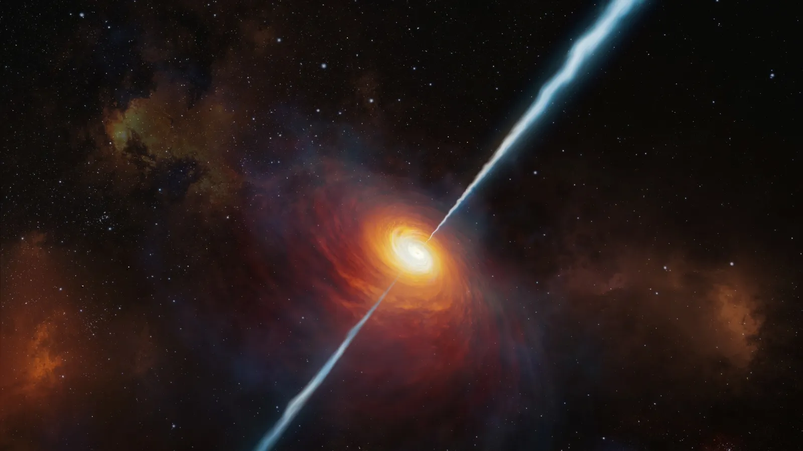
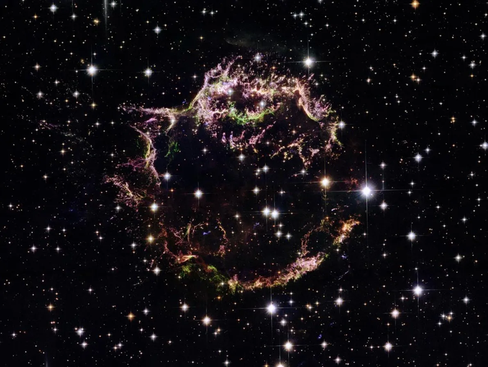
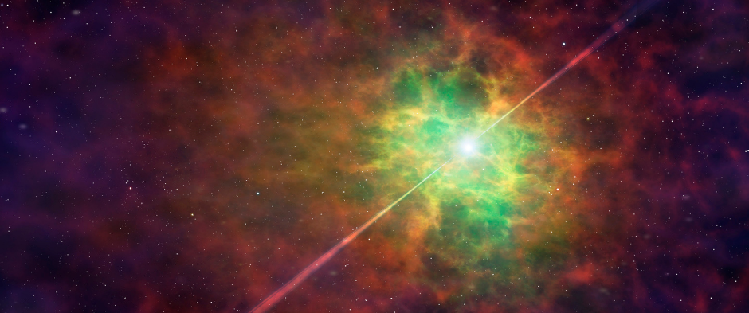
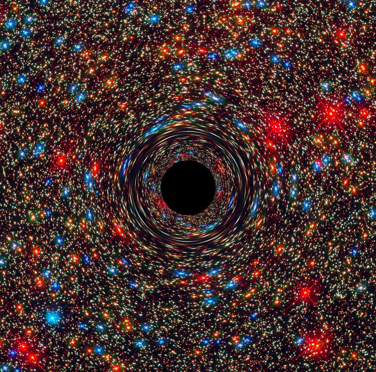
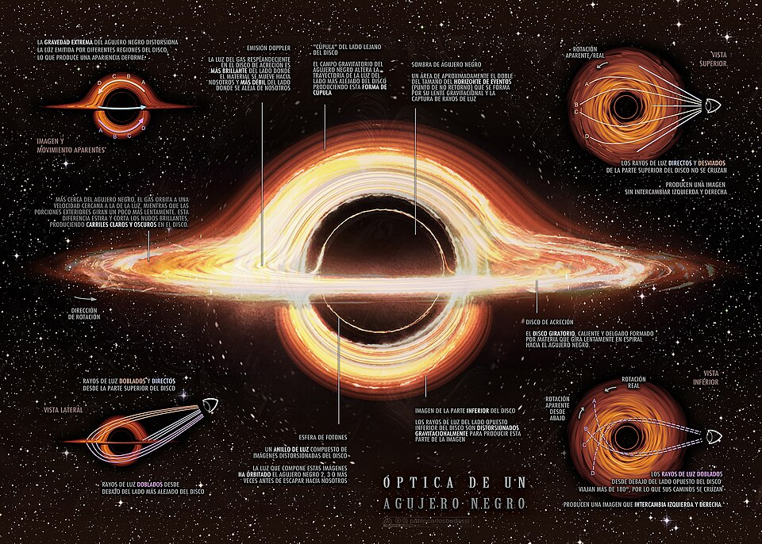

¿Qué es un agujero negro?
Un agujero negro es una región del espacio con una gravedad tan fuerte que nada puede escapar de ella. Se forma cuando una estrella masiva colapsa al final de su vida.

¿Cómo se forma un agujero negro?
Supernova
Una estrella muy masiva explota al final de su vida en una supernova.
Colapso
El núcleo de la estrella colapsa por su propia gravedad.
Agujero Negro
Se forma un agujero negro si la masa es suficiente.
Partes de un agujero negro
- Horizonte de eventos: el punto sin retorno.
- Singularidad: densidad infinita.
- Disco de acreción: materia girando y calentándose.
